library(tidyverse)5 Grafieken maken
De eerste stap in data-analyse is een indruk krijgen van de data. Dit doen we door de data te visualiseren in grafieken en/of tabellen. In dit hoofdstuk maak je kennis met het onderdeel ggplot2 uit het tidyverse. Dit is een zeer krachtig package waarmee je oneindig veel grafieken kunt maken. Het is uitgegroeid tot de standaard in veel wetenschapsgebieden en daarbuiten. Het kost wel wat tijd om de logica van ggplot2 te doorgronden. Hier zullen we de komende hoofdstukken mee bezig zijn. Let op: ggplot2 is onderdeel van tidyverse je hoeft het dus niet apart te laden als je tidyverse hebt aangeroepen met library().
codeboek
In deze cursus leer je werken met zo’n 100 veelgebruikte functies in R. Het is belangrijk om voor jezelf een goed overzicht te houden van deze functies. Werk hier actief aan door een eigen codeboek aan te maken. Voeg tijdens of na afloop van het bestuderen van dit hoofdstuk de codes toe aan jouw codeboek.
5.1 De anatomie van een ggplot
Het doel van dit hoofdstuk is om de grafiek in Figuur 5.1 na te maken.1 Op deze manier leer je de logica van het maken van grafieken in ggplot hopelijk snel begrijpen. De doelgrafiek biedt een weergave van data van Nederlandse kinderen uit Wordbank. Het geeft voor vier woorden aan door hoeveel van de kinderen voor wie een vragenlijst is ingevuld ze gebruikt worden in de leeftijd van 8 t/m 16 maanden.
1 De opzet van dit hoofdstuk is gebaseerd op hoofdstuk 1 uit R for Data Science.
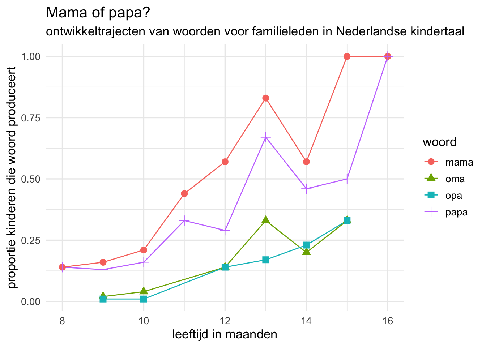
5.1.1 de data
De data waar we onze grafiek op baseren staan in het databestand wordbank_dutch_WG_items.csv in de map _datasets in ons R-project. We gaan dit bestand eerst inlezen en kijken of we aanpassingen moeten doen aan de namen of het type van de variabelen. Zorg voordat we beginnen dat je het package tidyverse hebt geladen. Dit zorgt ervoor dat het package ggplot2 ook actief is.
#inlezen databestand
wordbank_dutch <- read_csv("_datasets/wordbank_dutch_WG_items.csv")
#data bekijken
wordbank_dutch# A tibble: 3,969 × 5
item_id item_definition category month proportion
<dbl> <chr> <chr> <dbl> <dbl>
1 1 au/ai(pijn) sounds 8 0
2 1 au/ai(pijn) sounds 9 0
3 1 au/ai(pijn) sounds 10 0
4 1 au/ai(pijn) sounds 11 0.11
5 1 au/ai(pijn) sounds 12 0.14
6 1 au/ai(pijn) sounds 13 0.17
7 1 au/ai(pijn) sounds 14 0.14
8 1 au/ai(pijn) sounds 15 0.17
9 1 au/ai(pijn) sounds 16 0.4
10 2 behbeh(schaap) sounds 8 0
# ℹ 3,959 more rowsDe data zien er goed uit: elke variabele heeft zijn eigen kolom. Het inlezen is dus goed gelukt. De namen van de variabelen voldoen aan onze standaard (snake_case) dus daar hoeven we niets aan aan te passen. Laten we de data eens bekijken om te zien of we misschien het type van variabelen aan moeten passen. De dataset geeft informatie over op welke leeftijd woorden (in de kolom item_definition) door hoeveel kinderen worden geproduceerd. De eerste variabele item_id bestaat uit getallen en wordt door R als numeriek gezien. De item_id moeten we echter als een naam zien en het dus beter om deze om te zetten naar een factor. Hetzelfde geldt voor de variabelen item_definition en category die nu nog van type character zijn. We hebben hier te maken met de specifieke woorden waarvoor gegevens verzameld zijn (item_definition) en de categorie waartoe de woorden volgens de vragenlijst behoren (category). Dit zijn beide terugkerende namen (bijv. au/ai(pijn) komt meerdere keren voor, net als sounds) en observaties willen we aan elkaar kunnen linken. Dat lukt alleen als we ze als factor behandelen. Tot slot geeft de variabelen month aan op welke leeftijd (in maanden) van de kinderen de vragenlijst is ingevuld en de variabele proportion geeft aan welke proportie kinderen (voor wie een vragenlijst is ingevuld) op die leeftijd het woord kon produceren. Het gaat hier in beide gevallen om getallen en de variabelen zijn door R ook als zodanig herkend (overigens is het ook mogelijk om month als een factor te beschouwen). Dit betekent dat de eerste drie variabelen moeten omzetten naar factoren, aangezien we hier te maken hebben met namen van levels. Omdat het hier gaat om drie kolommen maken we gebruik van de functie across() die het mogelijk maakt om een bewerking op meerdere kolommen tegelijk uit te voeren. Dit bespaart wat typewerk. We gebruiken : tussen de namen van de variabelen om aan te geven dat we ook de tussenliggende variabelen willen aanpassen. Het is hierbij natuurlijk wel belangrijk dat de volgorde van de variabelen niet is aangepast.
wordbank_dutch <- wordbank_dutch %>%
mutate(across(item_id:category, as.factor))
wordbank_dutch# A tibble: 3,969 × 5
item_id item_definition category month proportion
<fct> <fct> <fct> <dbl> <dbl>
1 1 au/ai(pijn) sounds 8 0
2 1 au/ai(pijn) sounds 9 0
3 1 au/ai(pijn) sounds 10 0
4 1 au/ai(pijn) sounds 11 0.11
5 1 au/ai(pijn) sounds 12 0.14
6 1 au/ai(pijn) sounds 13 0.17
7 1 au/ai(pijn) sounds 14 0.14
8 1 au/ai(pijn) sounds 15 0.17
9 1 au/ai(pijn) sounds 16 0.4
10 2 behbeh(schaap) sounds 8 0
# ℹ 3,959 more rows5.1.2 De grafiek maken
De data staan er nu goed bij en we kunnen aan de slag met onze grafiek. Elke grafiek begint met een aanroep van de functie ggplot() waarin we moeten aangeven op basis van welke datatabel we een grafiek willen maken.
ggplot(data = wordbank_dutch)
Dit levert een leeg canvas op (Figuur 5.2). We hebben ggplot namelijk nog niet verteld welke variabelen uit de dataset we op welke manier willen weergeven in de grafiek. Dit laatste noemen we een mapping van variabelen naar eigenschappen van de grafiek. Die eigenschappen worden aesthaetics genoemd (aes in het kort). Je moet hierbij denken aan de x-as, y-as, kleuren en vormen. Zo zien we in onze doelgrafiek dat de variabele month is afgebeeld op de x-as, de variabele proportion op de y-as en dat de variabele item_definition tot uitdrukking komt in de kleur en de vorm van symbolen. Laten we beginnen met de mapping van variabelen op de x-as en de y-as.
ggplot(data = wordbank_dutch,
mapping = aes(x = month, y = proportion))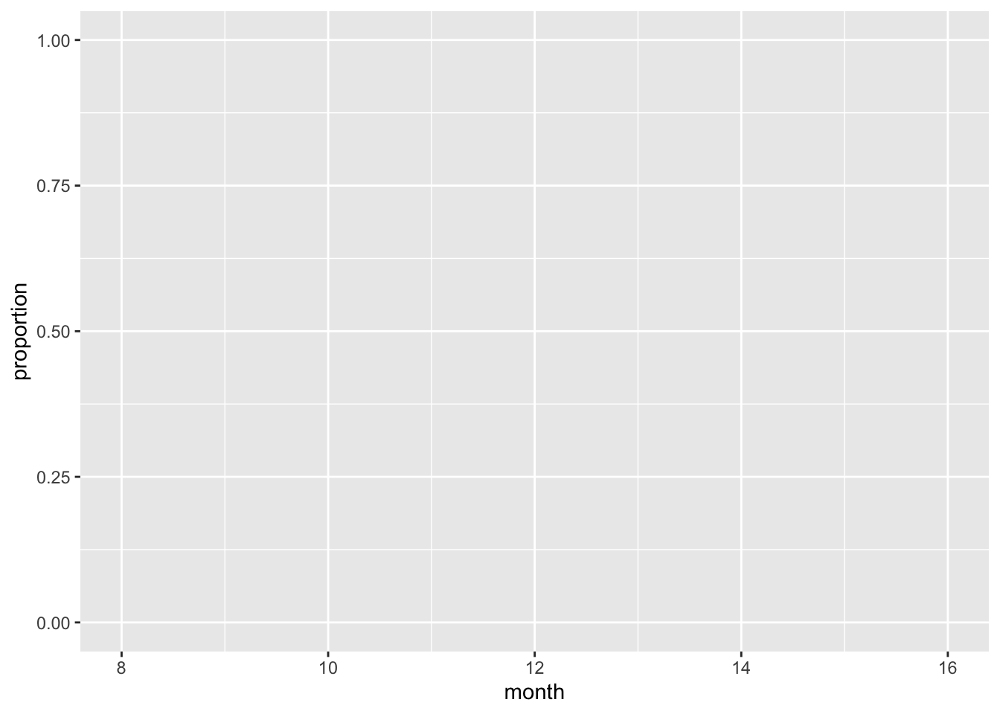
Nu zien we in Figuur 5.3 de namen van de variabelen verschijnen op de assen en zien we dat ook het bereik van beide variabelen is weergegeven, 0-1 voor proportion op de y-as en 8-16 voor month op de x-as. Voor we verder gaan, versimpelen we de code eerst met de pipe-operator die we in het vorige hoofdstuk hebben leren kennen. Onderstaande code geeft je het standaard begin voor elke grafiek: een dataset die naar ggplot wordt doorgezet en in aes() een specificatie van de mapping van variabelen die moeten worden afgebeeld.
wordbank_dutch %>%
ggplot(aes(x = month, y = proportion))We zien nu al welke variabelen er afgebeeld gaan worden, maar we zien de data zelf nog niet. Om die zichtbaar te maken moeten we een geom toevoegen als een nieuwe laag aan onze grafiek. We hebben hier de keuze uit een groot aantal mogelijke type grafieken, denk aan lijnen, punten, staven. Elke dataset vraagt om zijn eigen aanpak. Dus het is noodzakelijk om vooraf goed na te denken over wat je precies wilt laten zien. Het beste kun je eerst op papier een schets maken voor jezelf.
In onze doelgrafiek wordt er gebruik gemaakt van zowel punten als lijnen. We beginnen met de punten. Hiervoor gebruiken we geom_point(). Let op: om een laag toe te voegen aan een grafiek gebruiken we na de aanroep van ggplot() een +. Deze + moet aan het eind van de regel komen, anders krijg je een error.
wordbank_dutch %>%
ggplot(aes(x = month, y = proportion)) +
geom_point()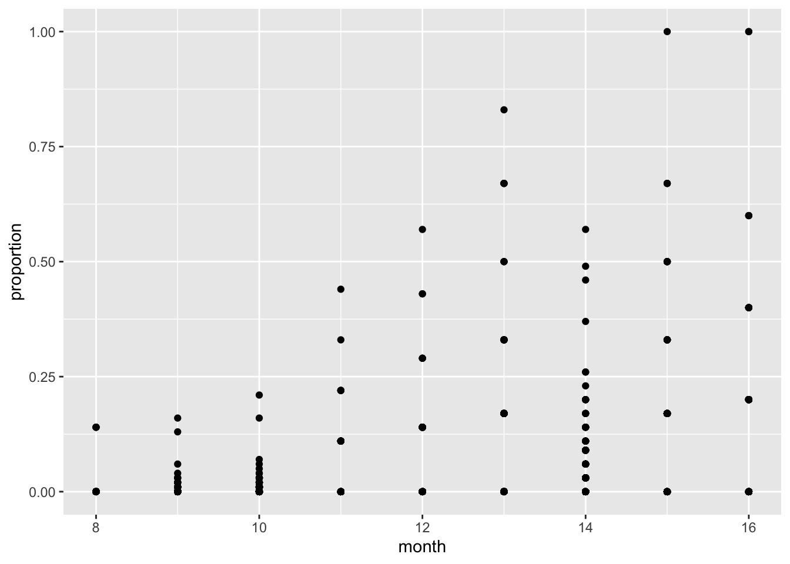
geom_point().We hebben in Figuur 5.4 veel meer stippen dan we in onze doelgrafiek zien. Dit komt, omdat we de data van alle woorden in de vragenlijst naar ggplot() hebben gestuurd terwijl we de gegevens van maar vier woorden willen laten zien. We moeten onze dataset dus eerst nog filteren voor we de grafiek gaan maken. We maken hiervoor eerst een vector dutch_words aan met de relevante woorden erin. We filteren ook proporties van 0 eruit om de data iets overzichtelijker te maken.
dutch_words <- c("mama", "papa", "oma", "opa")wordbank_dutch %>%
filter(item_definition %in% dutch_words,
proportion > 0) %>%
ggplot(aes(x = month, y = proportion)) +
geom_point()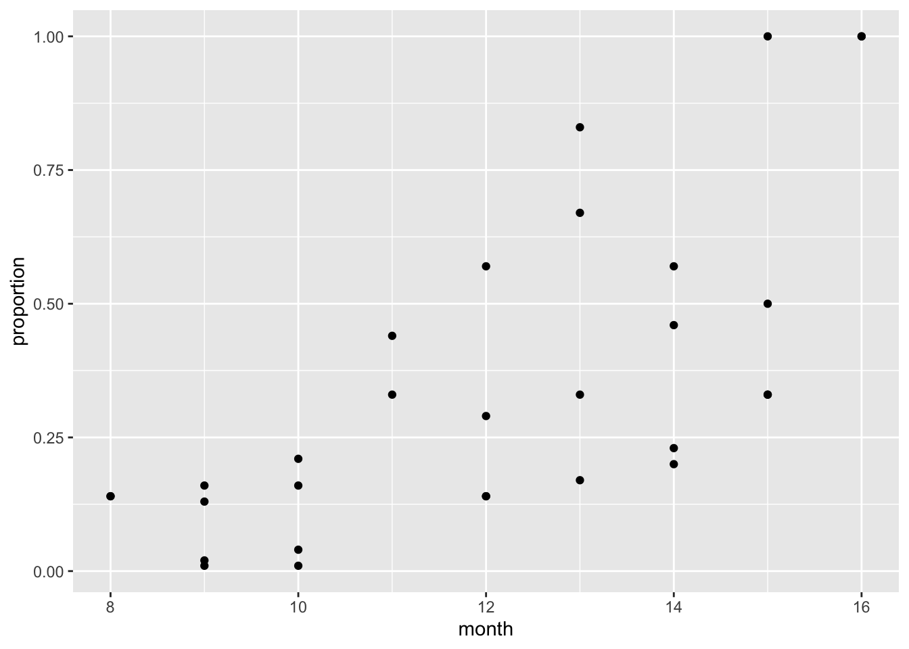
We zien nu de datapunten (Figuur 5.5), maar nog niet bij welk woord ze horen. Alle punten hebben dezelfde vorm en kleur. Als we de vorm en kleur willen laten variëren op basis van het woord waar het datapunt bijhoort, dan moeten we een nieuwe mapping maken, namelijk van de variabele item_definition (het woord). Zoals hierboven gezien, wordt die mapping gemaakt binnen aes(). We kunnen dit op twee niveaus doen: (i) op het niveau van ggplot() en/of (ii) op het niveau van het geom. Ter illustratie laten we het hier op beide niveaus zien: de mapping naar vorm (shape) maken we op het niveau van ggplot() en de mapping naar kleur op het niveau van geom_point().
wordbank_dutch %>%
filter(item_definition %in% dutch_words,
proportion > 0) %>%
ggplot(aes(x = month, y = proportion, shape = item_definition)) +
geom_point(aes(color = item_definition))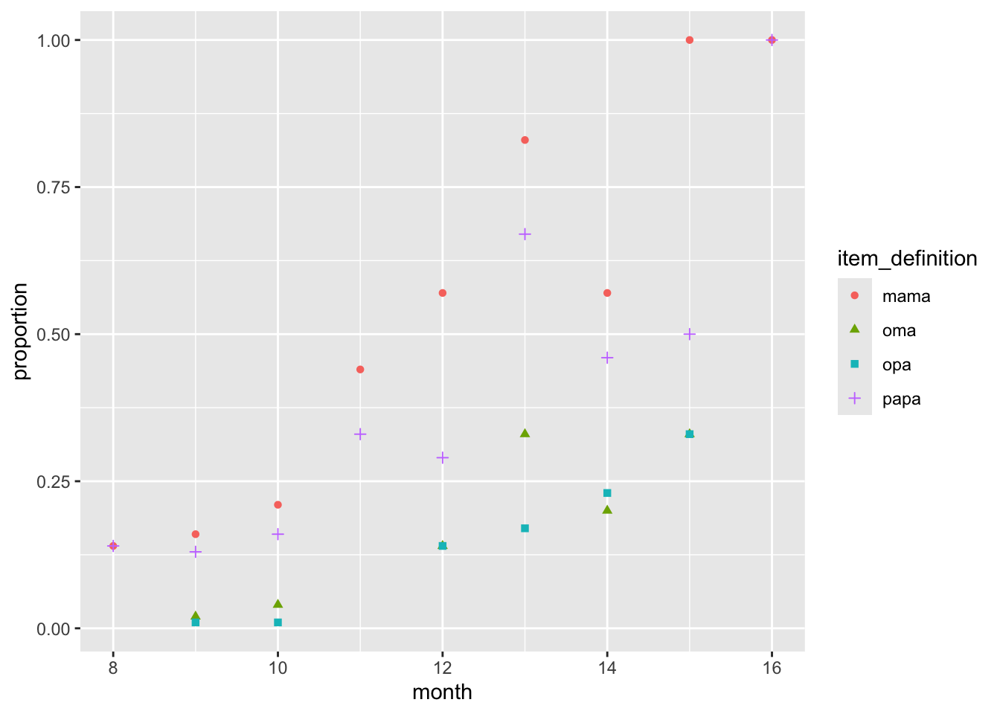
shape en color is nu zichtbaar bij welke woorden de datapunten horen.Dit lijkt er al meer op (Figuur 5.6). De grootte van de symbolen is alleen kleiner dan in onze doelgrafiek. Dit kunnen we aanpassen door het argument size toe te voegen aan geom_point() (Figuur 5.7). Omdat het hier niet gaat om de mapping van een variabele, maar om het toekennen van een constante waarde (de waarde ‘3’), voegen we dit argument toe buiten aes().
wordbank_dutch %>%
filter(item_definition %in% dutch_words,
proportion > 0) %>%
ggplot(aes(x = month, y = proportion, shape = item_definition)) +
geom_point(aes(color = item_definition), size = 3)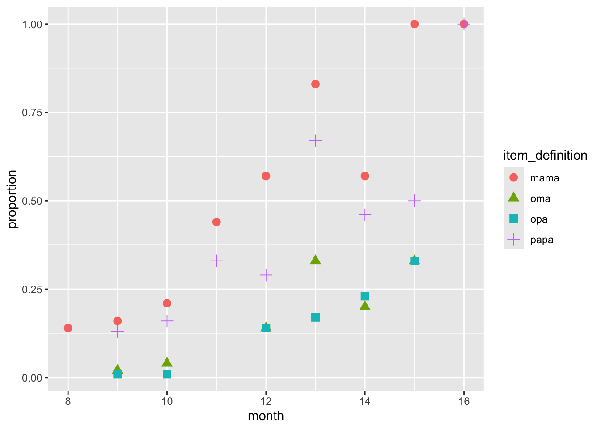
size.Let op: wanneer je een variabele meegeeft als argument buiten aes() dan gebeuren er andere dingen dan je verwacht (je zult waarschijnlijk een error krijgen). Bedenk dus altijd goed of je een eigenschap van de grafiek wil laten variëren op basis van een variabele: zo ja, dan moet dit binnen aes() gebeuren, zo niet, dan moet het buiten aes().
Laten we nu de lijnen toevoegen, die ontbreken nog. Hiervoor gebruiken we het geom geom_line(). Deze voegen we met een + toe aan onze bestaande grafiek.
wordbank_dutch %>%
filter(item_definition %in% dutch_words,
proportion > 0) %>%
ggplot(aes(x = month, y = proportion, shape = item_definition)) +
geom_point(aes(color = item_definition), size = 3) +
geom_line()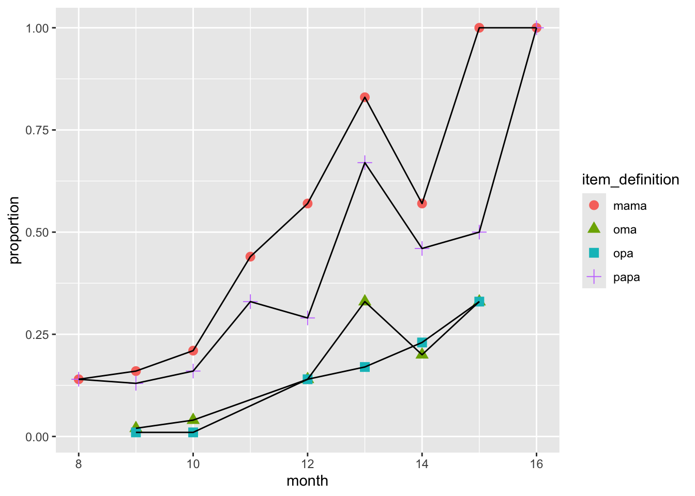
geom_line()We zien lijnen in Figuur 5.8, maar er gaan twee dingen mis: (i) de lijnen hebben niet de juiste kleur, ze zijn allemaal zwart, en (ii) als je goed kijkt, zie je dat de lijnen over de punten heenlopen, dat ziet er minder fraai uit. Dit laatste is makkelijk op te lossen door de volgorde van de geoms om te draaien (Figuur 5.9).
wordbank_dutch %>%
filter(item_definition %in% dutch_words,
proportion > 0) %>%
ggplot(aes(x = month, y = proportion, shape = item_definition)) +
geom_line() +
geom_point(aes(color = item_definition), size = 3)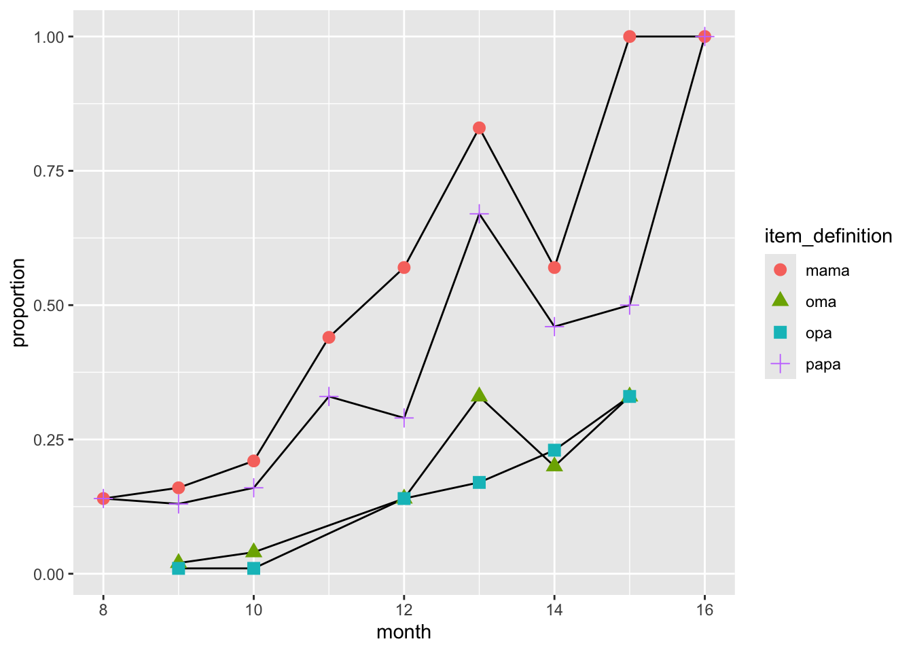
Dit laat zien dat je het maken van grafieken in ggplot (tot een bepaalde hoogte) kunt vergelijken met het schilderen op een doek (canvas): wat je het laatst toevoegt is het best zichtbaar. Een ggplot is letterlijk opgebouwd uit lagen (layers).
Het eerste probleem (dat de lijnen zwart zijn) laat iets heel fundamenteels zien over de mapping in aes(). Zoals we eerder hebben gezien, kun je deze mapping zowel op het niveau van ggplot() als op het niveau van het geom specificeren. Dit maakt een wezenlijk verschil. Mappings op het niveau van ggplot() worden overgeërfd door latere geoms, tenzij de mapping op het niveau van het geom wordt overschreven. Mappings op het niveau van een geom zijn alleen beschikbaar op dat niveau en dus niet toegankelijk voor andere geoms. Dat is waar het in onze grafiek misgaat. We hebben kleur gespecificeerd op het niveau van geom_point() en daardoor is deze mapping niet toegankelijk voor geom_line(). Wanneer we deze mapping verhuizen naar het hoogste niveau van ggplot() dan zien we dat de lijnen de juiste kleur krijgen (Figuur 5.10).
wordbank_dutch %>%
filter(item_definition %in% dutch_words,
proportion > 0) %>%
ggplot(aes(x = month, y = proportion, color = item_definition, shape = item_definition)) +
geom_line() +
geom_point(size = 3)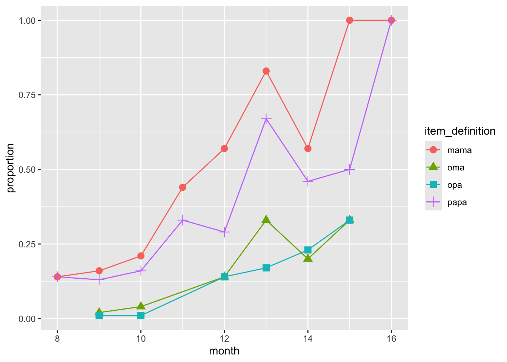
color op het niveau van de functie ggplot() te zetten, wordt deze toegankelijk voor alle volgende geoms.Het is dus heel belangrijk om vooraf goed te bedenken waar je een mapping van een variabele naar een eigenschap van de grafiek (aesthaetics) allemaal terug wilt zien. Om het belang van de goede plek van de mapping te onderstrepen, laten we zien wat er gebeurt als we beide mappings (color en shape) van ggplot() verhuizen naar het niveau van geom_point().
wordbank_dutch %>%
filter(item_definition %in% dutch_words,
proportion > 0) %>%
ggplot(aes(x = month, y = proportion)) +
geom_line() +
geom_point(aes(color = item_definition, shape = item_definition), size = 3)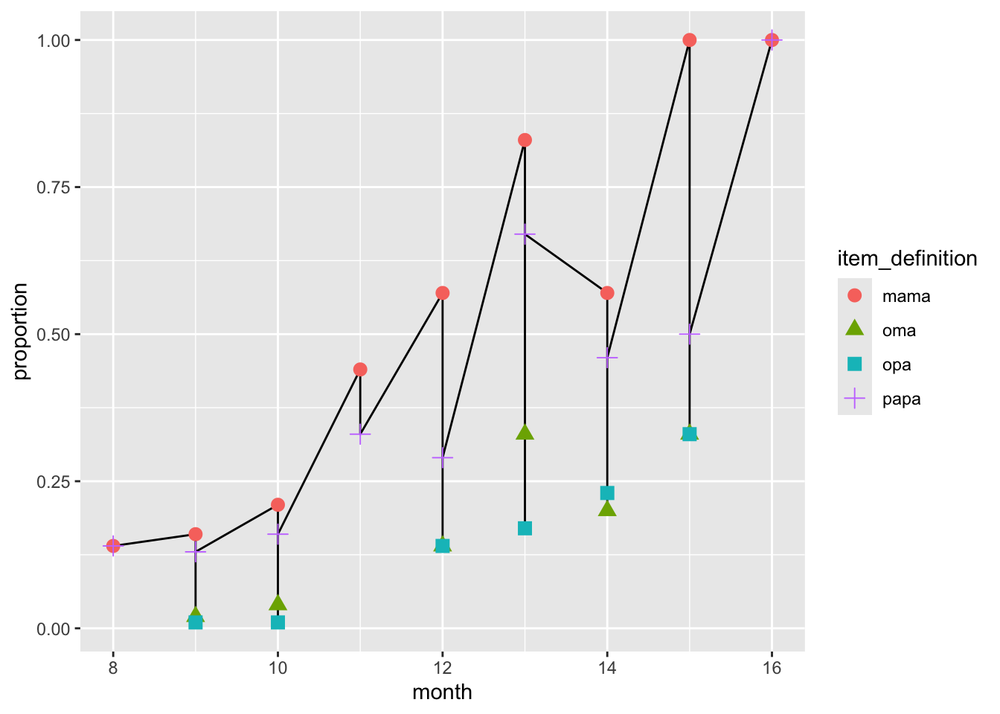
De lijn verliest niet alleen zijn kleur, maar is nu ook helemaal de weg kwijt. Dit komt doordat geom_line() nu niet meer weet welke punten bij elkaar horen. Eerder krijg het geom die informatie nog overgeërfd via de mapping van shape in ggplot(), maar die is nu verdwenen. Om dit op te lossen moeten we die mapping weer terugzetten of we moeten de groepering expliciet maken op het niveau van ggplot(). Dat laatste doen we door item_definition te mappen op group (Figuur 5.12).
wordbank_dutch %>%
filter(item_definition %in% dutch_words,
proportion > 0) %>%
ggplot(aes(x = month, y = proportion, group = item_definition)) +
geom_line() +
geom_point(aes(color = item_definition, shape = item_definition), size = 3)group.Dit laat zien dat er dus meerdere manieren zijn om tot een grafiek te komen. Stelregel is daarbij dat als je een bepaalde mapping van een variabele naar een eigenschap van de grafiek op meerdere plekken tot uitdrukking wilt laten komen, dat je die mapping dan zo hoog mogelijk moet specificeren (dus op het niveau van ggplot()). In ons geval is dit dus de beste oplossing:
wordbank_dutch %>%
filter(item_definition %in% dutch_words,
proportion > 0) %>%
ggplot(aes(x = month, y = proportion,
color = item_definition, shape = item_definition)) +
geom_line() +
geom_point(size = 3)De data in de grafiek in Figuur 5.13 zien er nu goed uit. We moeten alleen het uiterlijk van de grafiek nog aanpassen. We veranderen eerst de achtergrondkleur. Dit doen we door de theme aan te passen. Er zijn binnen ggplot meerdere themes beschikbaar. We gebruiken hier theme_minimal() dat een witte achtergrond met lichte rasterlijnen geeft (Figuur 5.14). Het getal (13) geeft de basisgrootte van de titels in de grafiek.
wordbank_dutch %>%
filter(item_definition %in% dutch_words,
proportion > 0) %>%
ggplot(aes(x = month, y = proportion,
color = item_definition, shape = item_definition)) +
geom_line() +
geom_point(size = 3) +
theme_minimal(13)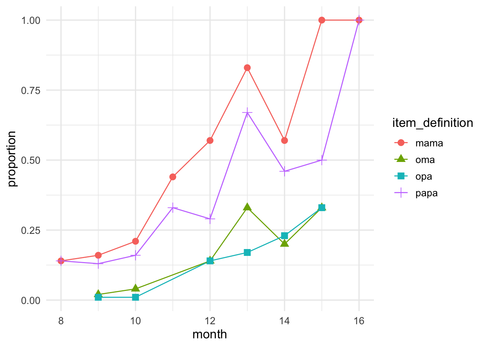
theme_minimal() krijgt de grafiek een witte achtergrond met lichte rasterlijnen.De laatste stap is om de namen van de assen en de legenda aan te passen en een titel en ondertitel toe te voegen. Dit doen we via labs() (Figuur 5.15).
wordbank_dutch %>%
filter(item_definition %in% dutch_words,
proportion > 0) %>%
ggplot(aes(x = month, y = proportion,
color = item_definition, shape = item_definition)) +
geom_line() +
geom_point(size = 3) +
theme_minimal(13) +
labs(
x = "leeftijd in maanden",
y = "proportie kinderen die woord produceert",
shape = "woord",
color = "woord",
title = "Mama of papa?",
subtitle = "ontwikkeltrajecten van woorden voor familieleden in Nederlandse kindertaal"
)labs().Hiermee is het ons stapsgewijs gelukt om onze doelgrafiek (Figuur 5.1) volledig na te maken. Voordat je verder leest: check of je elke regel code in het laatste codeblok voor jezelf uit kunt leggen. Zo niet, kijk dan eerst nog even terug in het hoofdstuk.
5.2 Soorten grafieken
Hieronder geven we alvast een voorbeeld van de verschillende grafieken die je gaat tegenkomen en lichten we er in het voorbijgaan nog wat functionaliteiten van ggplot2 uit. Dit gaat in vogelvlucht. Veel van de dingen die je hier ziet langskomen zullen we in latere hoofdstukken nog verder uitwerken. Probeer voor nu steeds voor jezelf helder te krijgen wat de code doet.
5.2.1 staafdiagrammen
Voor staafdiagrammen gebruiken we de geoms geom_bar() of geom_col(). Het verschil is dat de eerste zelf tellingen uitvoert (Figuur 5.16) en de tweede (Figuur 5.17) tellingen gebruikt die je eerst zelf hebt aangemaakt. De kleur van een staaf pas je aan via de aesthaetic fill en color wordt gebruikt voor de rand om de staaf heen. In onderstaande figuur hebben we deze vastgezet op een bepaalde kleur (cornflowerblue). Dit is een van de standaardkleuren beschikbaar in R, zie colours() voor een overzicht van kleurnamen die je kunt gebruiken.
# Aanmaken van subset van woordcategorieën die we willen gaan tellen
dutch_categories <- c("animals", "sounds", "people", "vehicles", "toys", "food_drink", "body_parts")wordbank_dutch %>%
filter(category %in% dutch_categories) %>%
ggplot(aes(x = category)) +
geom_bar(fill = "cornflowerblue") +
theme_minimal(13) +
labs(
x = "categorie",
y = "aantal voorkomens"
)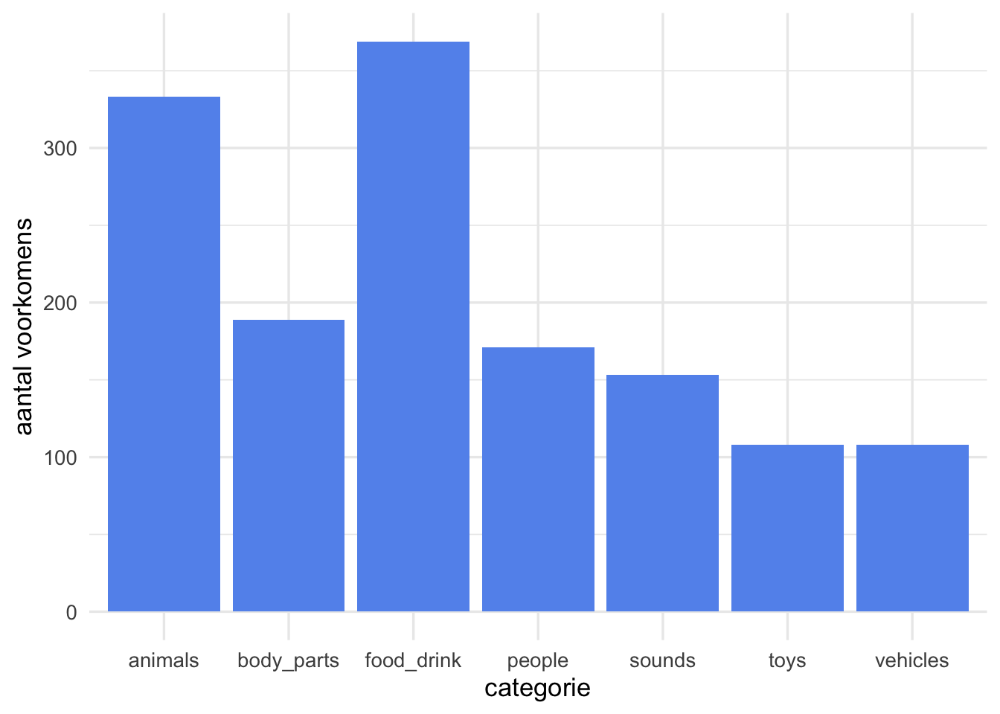
geom_bar() waarbij R zelf de tellingen uitvoertwordbank_dutch %>%
filter(category %in% dutch_categories) %>%
count(category) %>% # tellen hoe vaak elke categorie voorkomt in de data
ggplot(aes(x = category, y = n)) +
geom_col(fill = "cornflowerblue") +
theme_minimal(13) +
labs(
x = "categorie",
y = "aantal voorkomens"
)geom_col() waarbij we eerst zelf moeten tellen.Om een liggend staafdiagram te maken (Figuur 5.18), vaak beter leesbaar, kun je de functie coord_flip() toevoegen.
wordbank_dutch %>%
filter(category %in% dutch_categories) %>%
ggplot(aes(x = category)) +
geom_bar(fill = "cornflowerblue") +
coord_flip() + # omdraaien van de assen
theme_minimal(13) +
labs(
x = "categorie",
y = "aantal voorkomens"
)coord_flip()Bij geom_col() (en andere geoms waarbij een x en y gespecificeerd kan worden) kun je voor hetzelfde resultaat ook de mapping van variabelen naar x en y omdraaien i.p.v. coord_flip() te gebruiken. Dit kan nuttig zijn als je ook een andere coord_-functie wilt gebruiken.
wordbank_dutch %>%
filter(category %in% dutch_categories) %>%
count(category) %>%
ggplot(aes(x = n, y = category)) + # x en y zijn gewisseld t.o.v. eerder
geom_col(fill = "cornflowerblue") +
theme_minimal(13) +
labs(
x = "categorie",
y = "aantal voorkomens"
)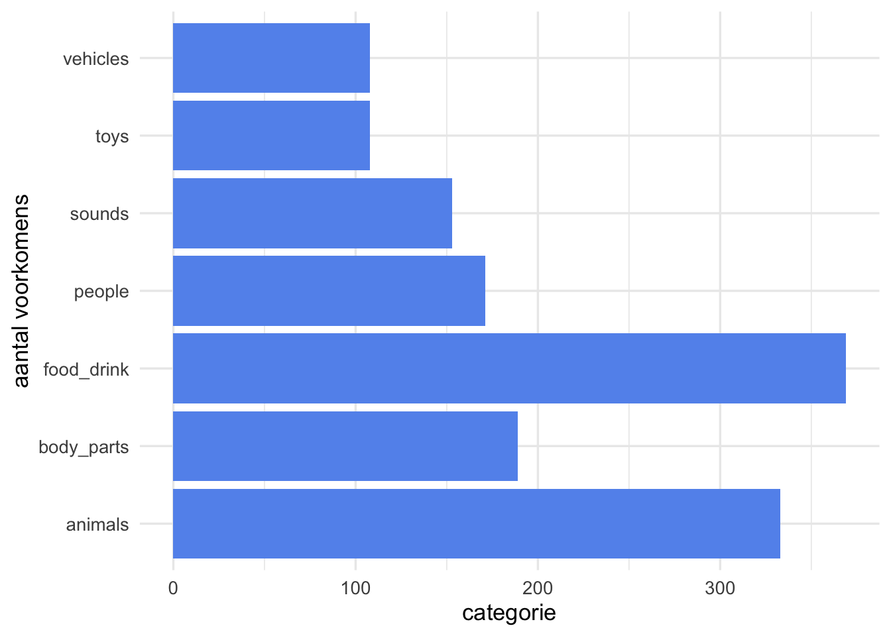
5.2.2 dotplots en scatterplots
Eerder in dit hoofdstuk hebben we gezien dat we geom_point() kunnen gebruiken om dotplots of scatterplots te maken. Hierbij geeft elk punt een observatie in de data weer. In Figuur 5.20 is voor elk kind in de dataset wordbank_dutch de proportie woorden die het kind kende toen de vragenlijst werd ingevuld uitgezet tegen de leeftijd in maanden op dat moment.
wordbank_dutch %>%
ggplot(aes(x = month, y = proportion)) +
geom_point(color = "pink2") +
theme_minimal(13)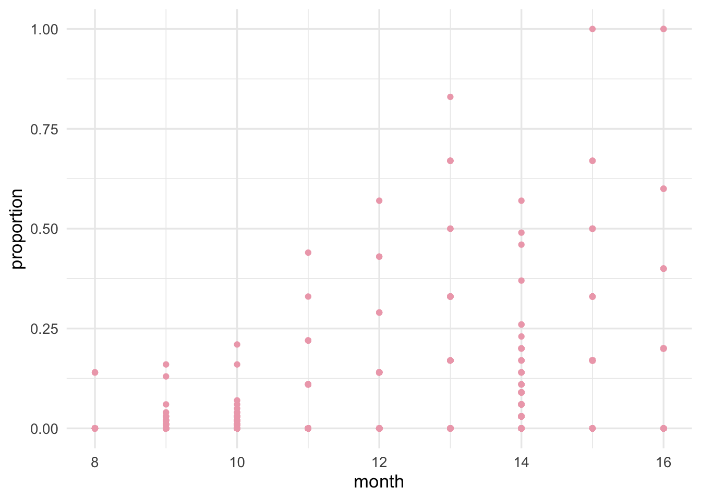
Wanneer er veel observaties worden afgebeeld loop je bij dit soort grafieken het risico op overplotting, veel datapunten worden dan over elkaar heen afgebeeld. Hierdoor is het aantal observaties niet goed zichtbaar. Je ziet namelijk geen verschil tussen bijvoorbeeld 1 obervatie of 10 observaties met dezelfde waardes. Om dit probleem (enigszins) tegen te gaan kun je doorzichtheid van punten veranderen. Wanneer je punten doorzichtiger maakt zullen plekken waar zich veel observaties ophouden uiteindelijk donkerder worden dan plekken met weinig observaties. De doorzichtigheid van geoms kun je instellen via de aesthaetic alpha. De alpha-waarde ligt tussen 0 en 1. In Figuur 5.21 hebben we die ingesteld op de waarde .4. Vergelijk dit figuur maar eens met Figuur 5.20.
wordbank_dutch %>%
ggplot(aes(x = month, y = proportion)) +
geom_point(color = "pink2", alpha = .4) +
theme_minimal(13)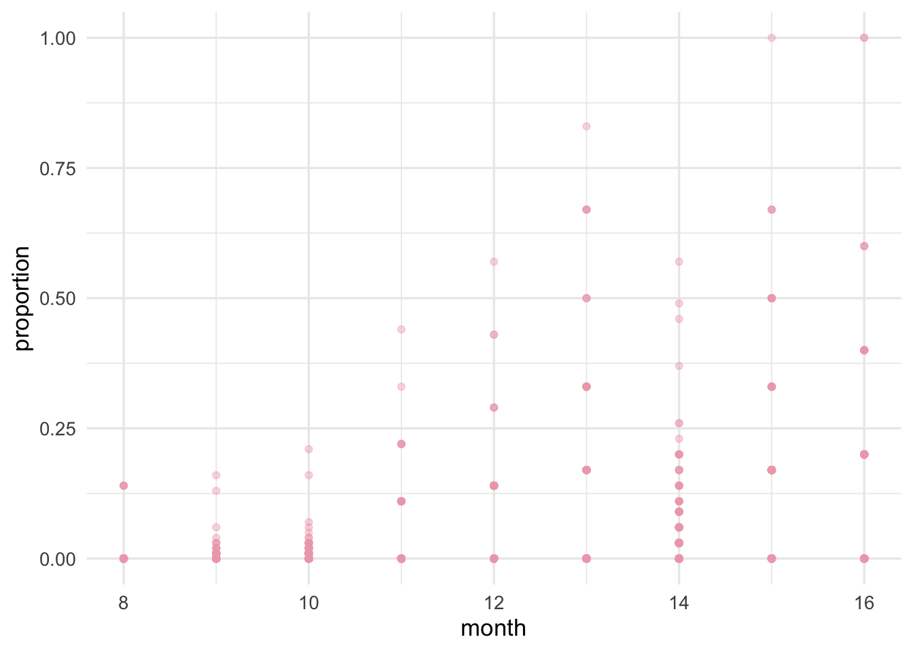
alpha-waarde van de punten aan te passen wordt duidelijker waar zich meerdere observaties bevinden.Een alternatief om overplotting tegen te gaan is door gebruik te maken van jitter. Hierbij wordt er wat ruis toegevoegd aan elke observatie en zal deze iets van positie veranderen. Je kunt hiervoor geom_jitter() gebruiken waarbij je met het argument width aangeeft hoeveel ruis je wilt toevoegen (tussen 0 en 1). Je kunt deze functie ook gebruiken in combinatie met het toevoegen van doorzichtigheid, zoals in Figuur 5.22. Voorzichtheid is wel geboden bij dit geom, omdat het de data enigszins aanpast. Dat zie je bijvoorbeeld ook als je naar de assen in Figuur 5.22 kijkt. Die geven nu continue waarden weer, terwijl de variabele month discreet gemeten is.
wordbank_dutch %>%
ggplot(aes(x = month, y = proportion)) +
geom_jitter(color = "pink2", alpha = .4, width = .2) +
theme_minimal(13)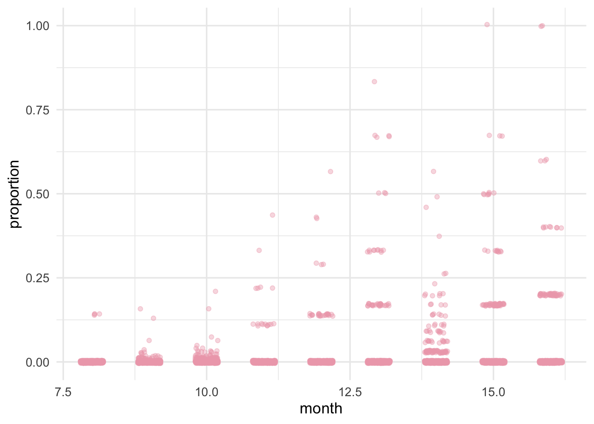
geom_jitter() kun je de positie van de punten enigszins aanpassen. Hierdoor wordt duidelijker waar zich meerdere observaties bevinden.Je kunt dotplots met geom_point() ook gebruiken om berekende statistieken, zoals het gemiddelde per categorie, weer te geven (Figuur 5.23). Hiervoor zul je wel eerst zelf deze statistieken moeten berekenen, bijv. met een combinatie van de functies group_by() en summarize(). Meer hierover in Hoofdstuk 7. Met de toevoeging ylim() hebben we in Figuur 5.23 het bereik van de y-as ingeperkt van 0 tot 0.2.
wordbank_dutch %>%
filter(category %in% c("animals", "sounds", "toys")) %>%
group_by(category) %>%
summarize(mean_proportion = mean(proportion)) %>%
ggplot(aes(x = category, y = mean_proportion)) +
geom_point(aes(color = category), size = 3, show.legend = FALSE) +
ylim(0, .2) + #inperken van bereik y-as
labs(y = "mean proportion") +
theme_minimal(13)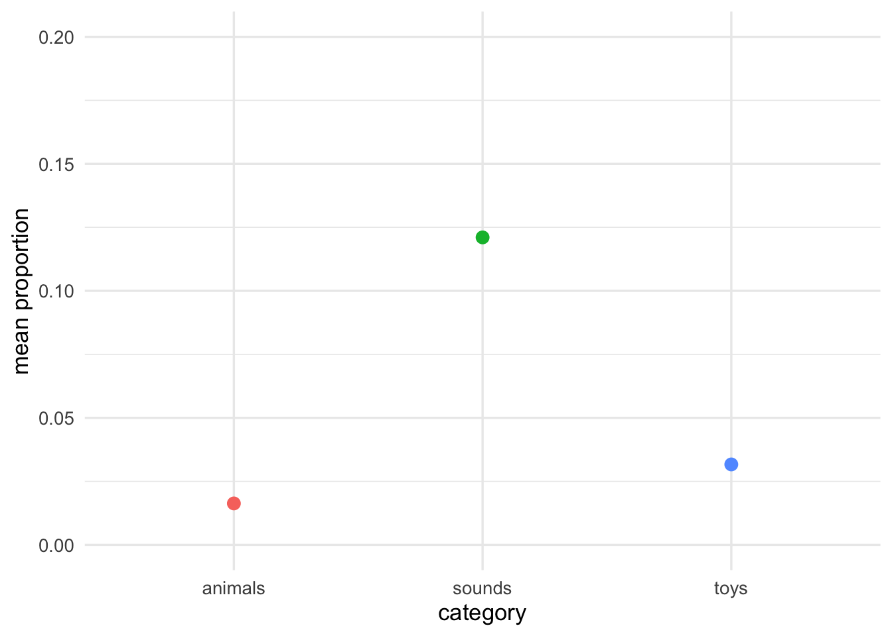
geom_point() waarbij een gemiddelde waarde per categorie wordt weergegevenTot slot, soms, en zeker in taalwetenschappelijk onderzoek, wil je in plaats van punten woorden zichtbaar maken. Het geom geom_text() geeft je die mogelijkheid. In Figuur 5.24 hebben we dit toegepast op onze doelgrafiek aan het begin van het hoofdstuk. Onder theme() hebben we hier bovendien toegevoegd dat we de legenda willen verwijderen, want met de woorden in de grafiek is deze overbodig geworden.
wordbank_dutch %>%
filter(item_definition %in% dutch_words,
proportion > 0) %>%
ggplot(aes(x = month, y = proportion, color = item_definition)) +
geom_line() +
geom_text(aes(label = item_definition), size = 3) +
theme_minimal(13) +
labs(
x = "leeftijd in maanden",
y = "proportie kinderen die woord produceert",
title = "Mama of papa?",
subtitle = "ontwikkeltrajecten van woorden voor familieleden in Nederlandse kindertaal"
) +
theme(legend.position = "none") # legenda verwijderen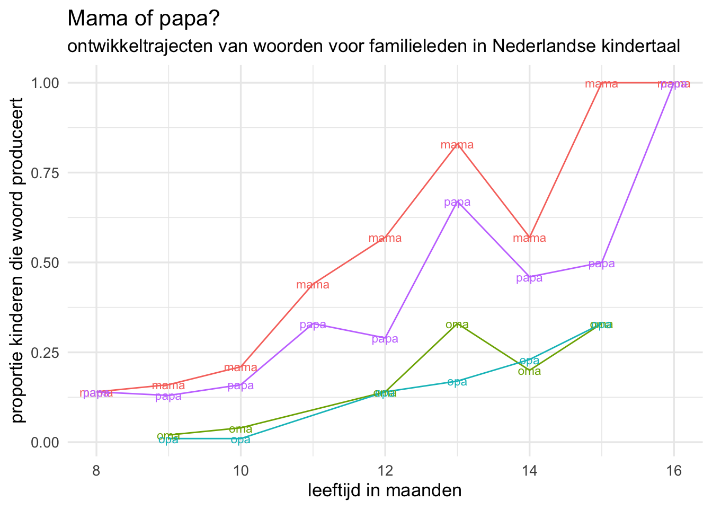
geom_text() kun je woorden zichtbaar maken.5.2.3 verdelingen zichtbaar maken
Een verdeling van een numerieke variabele kun je zichtbaar maken met een histogram via geom_histogram() (Figuur 5.25). Net als bij geom_bar() (en geom_col()) kun je hier de kleur van de staven en de rand aanpassen met respectievelijk fill en color.
wordbank_dutch %>%
filter(proportion > 0) %>%
ggplot(aes(x = proportion)) +
geom_histogram(binwidth = .1, fill = "seagreen2", color = "white") +
theme_minimal(13)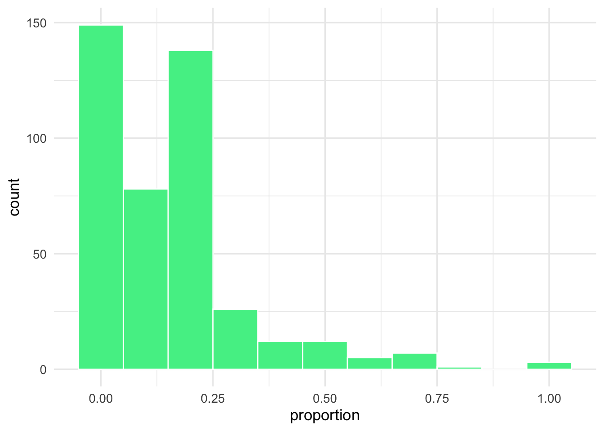
geom_histogram()Een alternatief is een density plot waarvoor geom_density() gebruikt wordt. Dit levert een wat vloeiendere variant op van een histogram (Figuur 5.26).
wordbank_dutch %>%
filter(proportion > 0) %>%
ggplot(aes(x = proportion)) +
geom_density(color = "seagreen4", fill = "seagreen2", alpha = .2) +
theme_minimal(13)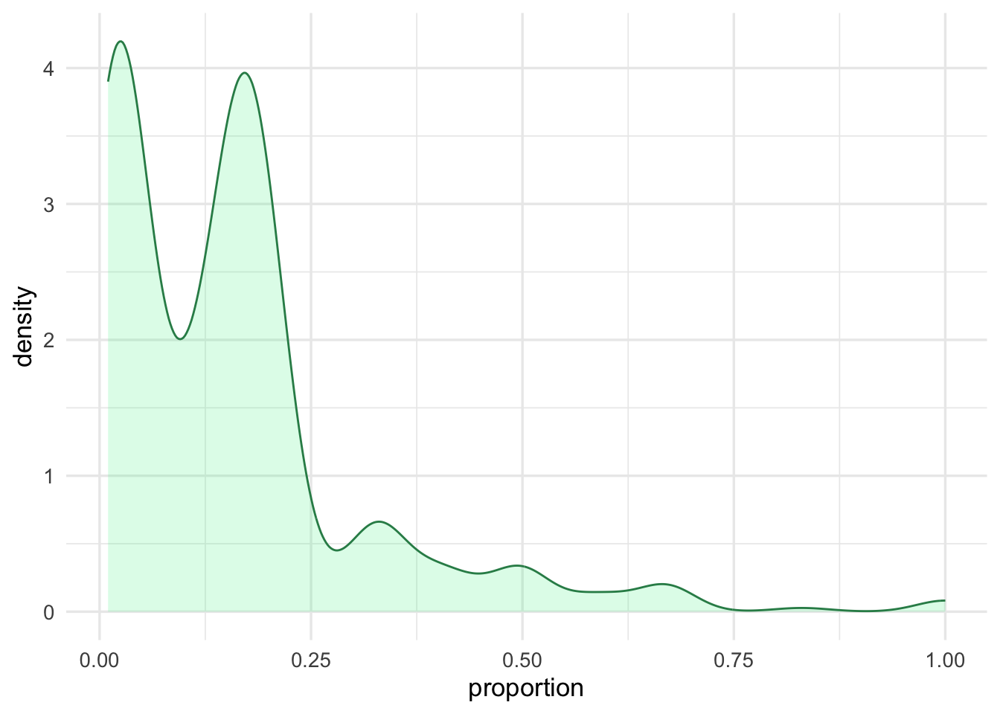
geom_density()Het laatste alternatief voor verdelingen van numerieke variabelen dat we uitgebreider zullen bespreken in Hoofdstuk 7, is het boxplot (Figuur 5.27). Zoals je misschien al kon raden, hebben we hiervoor geom_boxplot() tot onze beschikking.
wordbank_dutch %>%
filter(proportion > 0) %>%
ggplot(aes(x = proportion)) +
geom_boxplot(color = "seagreen4", fill = "seagreen2", alpha = .2) +
theme_minimal(13)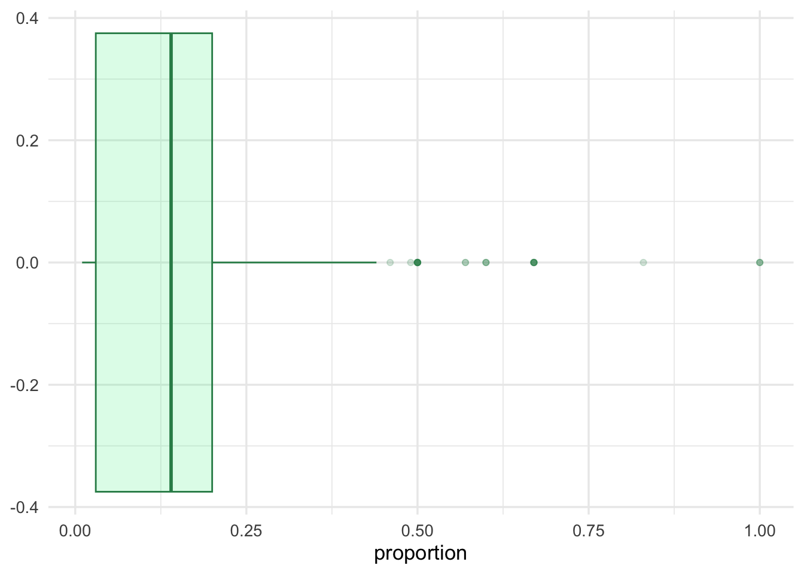
geom_boxplot() kun je een boxplot maken.Soms wil je dezelfde grafiek maken voor verschillende levels van een andere variabele. Hiervoor kun je facet_wrap() gebruiken. Het resultaat is een trellis plot waarbij ieder level zijn eigen grafiek krijgt. In Figuur 5.28 is dit gedaan om voor 3 verschillende dierengeluiden die kinderen zouden kunnen nadoen een boxplot te maken.
# Aanmaken van subset van dierengeluiden
animal_sounds <- c("behbeh(schaap)", "beu/boe/meu/moeh(koe)", "kwakkwak(eend)")wordbank_dutch %>%
filter(item_definition %in% animal_sounds) %>%
ggplot(aes(y = proportion)) +
geom_boxplot() +
facet_wrap(~ item_definition) +
labs(title = "Dierengeluiden") +
theme_minimal(13) +
theme(axis.text.x = element_blank()) # verwijderen getallen op de x-as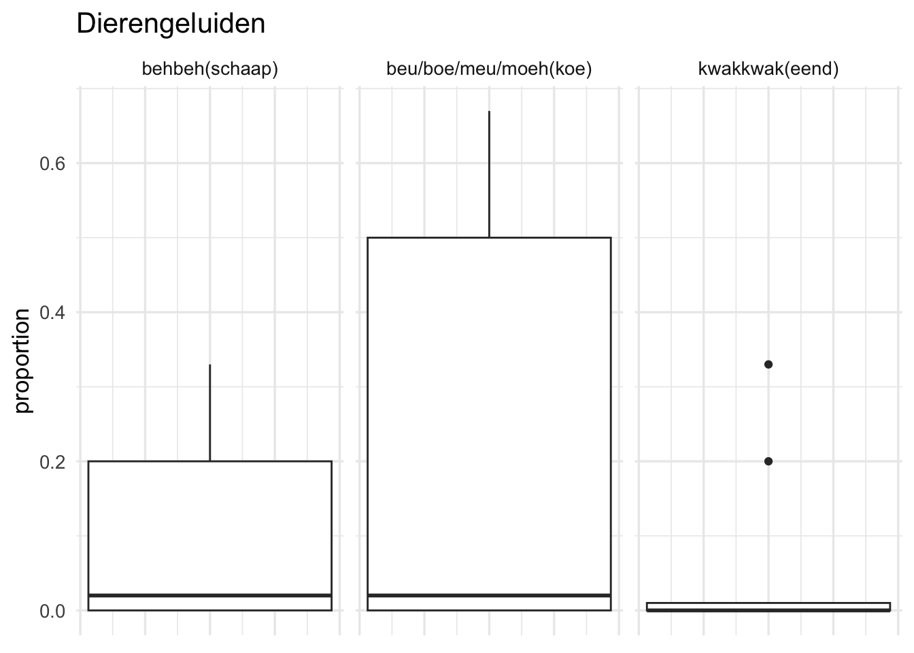
facet_wrap() maakt het mogelijk om dezelfde grafiek voor verschillende levels van een variabele te produceren.Verder leren
- In hoofdstuk 1 van Wickham et al. (2023) vind je een andere uitwerking van veel functies die in dit hoofdstuk aan bod zijn gekomen.
- Hoofdstuk 3 van Healy (2019) geeft een goede uiteenzetting van de anatomie van
ggplots. - het ggplot2 cheatsheet geeft een overzicht van de werking van
ggplot2. Voor nu misschien nog wat overweldigend, maar later zeker de moeite waard.
Wickham, H., Çetinkaya-Rundel, M., & Grolemund, G. (2023). R for Data Science (2de dr.). O’Reilly. https://r4ds.hadley.nz/
Healy, K. (2019). Data Visualisation: A Practical Introduction. Princeton University Press. https://socviz.co/
Nu zou je in staat moeten zijn Practicum 3 te maken.